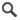

Les requêtes abonnées correspondent aux requêtes publiques auxquelles l'utilisateur courant est abonnée. Les actions suivantes sont disponibles :
: affiche la Vue Simple pour la requête souhaitée,

: désabonne l'utilisateur de la requête courante.
Pour de plus d'informations au sujet des tables de données veuillez vous référer à la section Table de données.
L'action affiche le panneau modal des requêtes publiques disponibles.
L'utilisateur coche les requêtes publiques souhaitées puis clique sur le bouton
afin d'afficher les requêtes souhaitées dans le
tableau des requêtes abonnées.